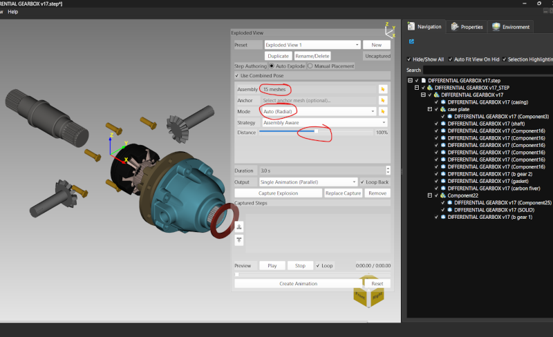
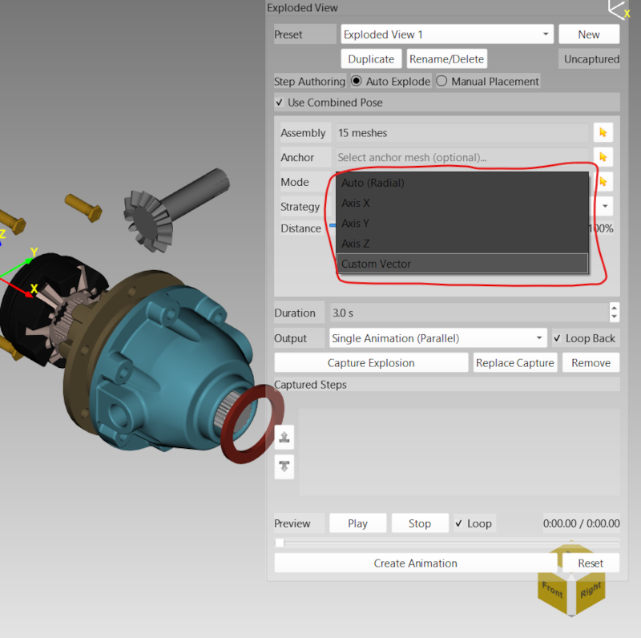
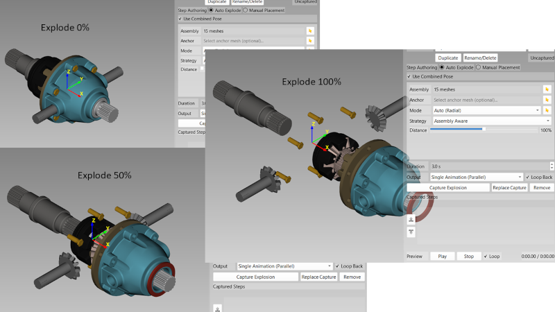
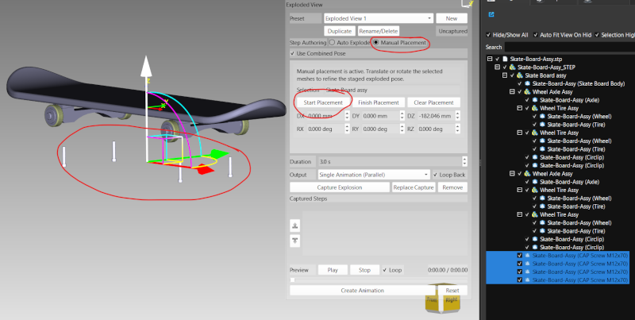
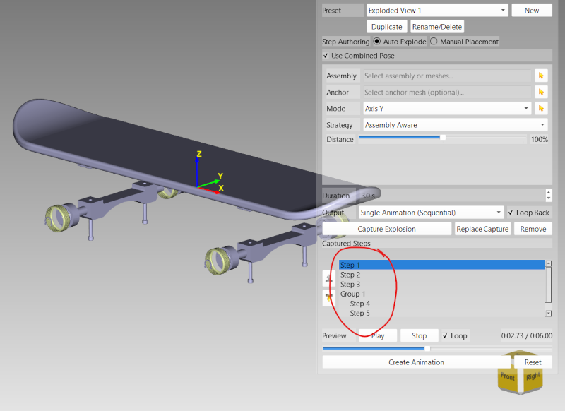

Lesson 15 of 18
Lesson 15: Exploded Views
Introduction
Exploded views pull an assembly's parts apart along an axis or radially outward from a center point, so you can see how components relate to each other without cutting or hiding anything. This is a staged, non-destructive view — your model's real geometry and transforms are never permanently changed.
Opening the Exploded View Panel
Step 1: Open the Panel
Open the Exploded View panel from the right-side panels.

Exploded View panel showing assembly, anchor, mode, and distance controlsSetting Up an Explosion
Step 1: Select Assembly
Use 'Select Assembly' to choose which group of objects will be exploded.
Step 2: Select Anchor
The anchor is the part that stays fixed in place while everything else moves away from it. Use 'Select Anchor' to choose it.
Step 3: Choose Explosion Mode
• Auto (Radial): Parts move outward from the assembly center automatically
• Axis X / Axis Y / Axis Z: Parts move along a single world axis
• Custom Vector: Define your own direction using the X, Y, Z vector fields
• Axis X / Axis Y / Axis Z: Parts move along a single world axis
• Custom Vector: Define your own direction using the X, Y, Z vector fields
Step 4: Auto Strategy
When using Auto mode, choose 'Assembly Aware' (respects sub-assembly grouping) or 'Classic' (treats every part independently).

Explosion mode dropdown showing Auto, Axis, and Custom Vector optionsControlling the Explosion Distance
Step 1: Distance Slider
Drag the explosion slider to control how far apart the parts spread, shown as a percentage.

Assembly at 0%, 50%, and 100% explosion distance
Start with a small distance percentage and increase it gradually — this makes it easier to keep track of which part went where.
Manual Placement
For assemblies that need a hand-crafted layout instead of a uniform automatic explosion:
Step 1: Start Manual Placement
Select the parts you want to reposition, then click 'Start Manual Placement'.
Step 2: Reposition with the Transform Gizmo
The on-screen transform gizmo appears on your selection. Drag its handles to translate or rotate the parts into their staged exploded pose — this does not touch the model's real transform.
Step 3: Finish or Clear
Click 'Finish Manual Placement' to keep the staged pose, or 'Clear Manual Placement' to discard it and start over.

Manual placement mode with transform gizmo active on a selected partCapturing Steps and Presets
Step 1: Capture
Click 'Capture' to record the current exploded pose as a step in the sequence. Build up multiple steps to create a staged, multi-part reveal.
Step 2: Reorder Steps
Use the up/down arrows next to the captured steps list to change the playback order.
Step 3: Presets
Save a full exploded configuration as a named preset so you can switch between different exploded layouts instantly.

List of captured explosion steps with reorder controlsAnimating the Explosion
Step 1: Animation Mode
• Single Animation (Parallel): All captured steps animate together at once
• Single Animation (Sequential): Steps play out one after another
• Separate Animations: Each step becomes its own independent animation clip
• Single Animation (Sequential): Steps play out one after another
• Separate Animations: Each step becomes its own independent animation clip
Step 2: Loop Back
Enable 'Loop Back' to have the animation return the assembly to its original, un-exploded position at the end.
Exploded view configurations, including presets and captured steps, are saved with your .mvf session file.